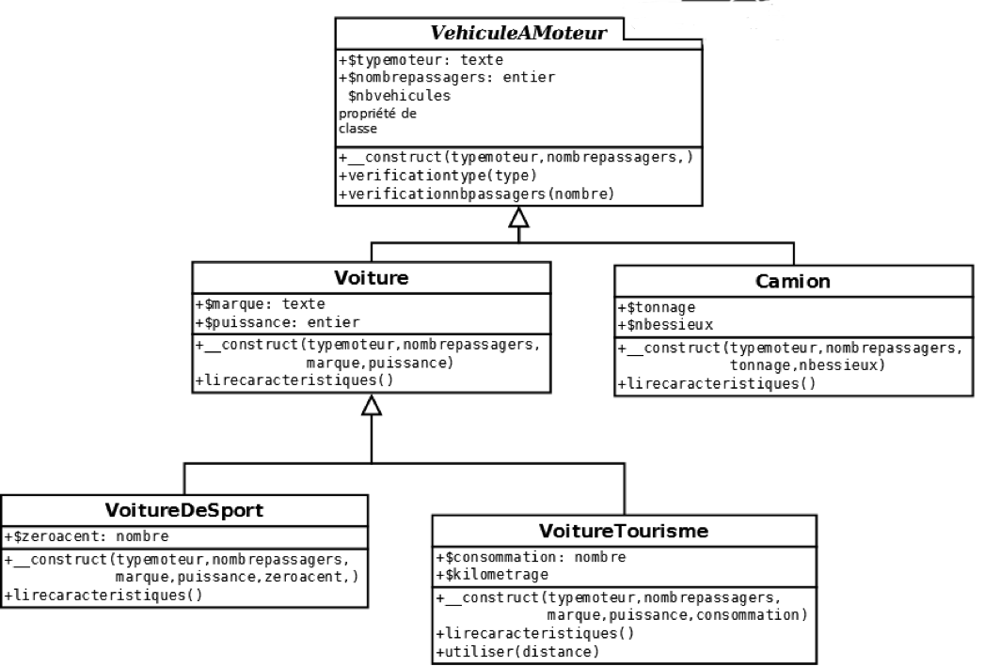

Programmation Orientée Objet (en PHP)
Programmation procédurale
- On code par étapes, en suivant un ordre
- Lisibilité, maintenabilité et sécurité faibles
Programmation Orientée Objet
- Un paradigme = une façon de penser
- On pense "objet" : tout élément est un objet
Un objet ?
- Un objet concret, que l'on peut toucher (tangible) : une chaise, un PC, une voiture...
- Quelque chose de plus 'abstrait' (intangible) : une personne, un fichier, une connexion BDD...
- Un objet est défini par un ensemble de propriétés, qui le distingue des autres objets
- Un objet est défini par des comportements, actions qui modifient son état
Exemple 1 : une voiture
- Propriétés : marque, modèle, immatriculation, kilomètres...
- Comportements : rouler, freiner, réviser...
Exemple 2 : une personne (client d'un site)
- Propriétés : nom, prénom, n° client, adresse, téléphone, login...
- Comportements : créer un compte, se connecter, commander...
La classe
- = Le moule dans lequel on fabrique un objet
- Regroupe les propriétés et les comportements de l'objet
- Propriétés = attributs
- Comportements = méthodes
La classe : exemple PHP
Déclaration d'une classe nommée 'Vehicule', fichier 'vehicule.class.php'
class Vehicule
{
// [ CODE ]
}
Attributs
class Vehicule
{
private $_marque;
private $_modele;
private $_immat;
private $_nbKm;
// [ CODE ]
}
Attributs
// Fichier vehicule.class.php
class Vehicule
{
private $_marque;
private $_modele;
...
// Méthode 'rouler'
public function rouler()
{
// [ CODE ]
}
// Méthode 'freiner'
public function freiner()
{
// [ CODE ]
}
}
L'instanciation
- Une instance est une occurrence d'une classe.
- Paul possède un Porsche Cayenne, version GTS, couleur rouge, achetée en 2018, qui a un numéro de série unique (ce qui est le cas d'une grande majorité de produits manufacturés), par exemple 1234.
- Pierre possède exactement le même modèle que Paul, de couleur rouge et achetée en 2018 aussi; ce qui la distingue de celle de Paul ce sera un numéro de série différent (par exemple 7856).
- Une ligne dans une table de BDD est une instance (différenciée par la clé primaire).
L'instanciation
- Les voitures de Pierre et de Paul seront donc 2 instances différentes de la classe voiture. Elles ont été fabriquées dans un même "moule" (la chaîne d'assemblage d'une même usine) = ce moule est la classe.
L'instanciation : exemple
// Fichier index.php
// Chargement de la classe
require "vehicule.class.php";
// Instanciation ou appel de la classe
$oVehicule = new Vehicule();
Visibilité
- Un droit d'accès aux méthodes et propriétés
- Sûreté de programmation
public: tout le code a accèsprivate: seule la classe a accèsprotected: accès pour la classe mère + fille(s)
Les 3 principes de la P.O.O.
- Encapsulation
- Héritage
- Polymorphisme
Encapsulation
- Désigne le fait que le code est regroupé dans une seule entité logique, la classe
L'héritage
- Un objet (enfant) peut hériter (dériver) des propriétés et méthodes d'un autre objet (parent)
- L'objet enfant peut ainsi définir des propriétés/méthodes spécifiques en plus de celles du parent
- L'héritage se traduit par "l'objet enfant est une sorte de l'objet parent" (spécialisation)
- En PHP, l'héritage est spécifié par le mot-clé
extends
L'héritage
En PHP, l'héritage est indiqué par le mot-clé extends :
// Fichier voiture.class.php
class Voiture extends Vehicule
{
// [ CODE ]
}
L'héritage
- Un classe mère peut avoir plusieurs classes filles
- Exemple : classe mère Vehicule pourrait avoir pour filles Voiture, Camion, Moto...
- L'objet enfant peut ainsi définir des propriétés/méthodes spécifiques en plus de celles du parent.
- Héritage simple : une classe fille ne peut hériter que d'une seule classe mère (PHP).
- Héritage multiple possible dans certains langages (C++, Python...) mais complexe.
Le polymorphisme
- Méthodes de mêmes noms peuvent exécuter des opérations différentes.
- Une méthode "avancer" dans la classe mère A.
- Une seconde méthode "avancer" dans la classe fille B héritant de la classe A.
Exemple
Exemples
cf. répertoire code_php_exemples
Avantages de la P.O.O.
- Code mieux structuré : tout est regroupé dans un même fichier
- Principes de réutilisabilité et de sécurité
- Langages orientés objet (PHP, C#, Ruby, Java, Javascript etc.)
- 1er langage objet : Smalltalk (1972)
Méthodes particulières
- Constructeur, destructeur
__construct(),__destruct()(facultatifs en PHP) - Méthodes magiques
En résumé
La P.O.O., c'est la classe !